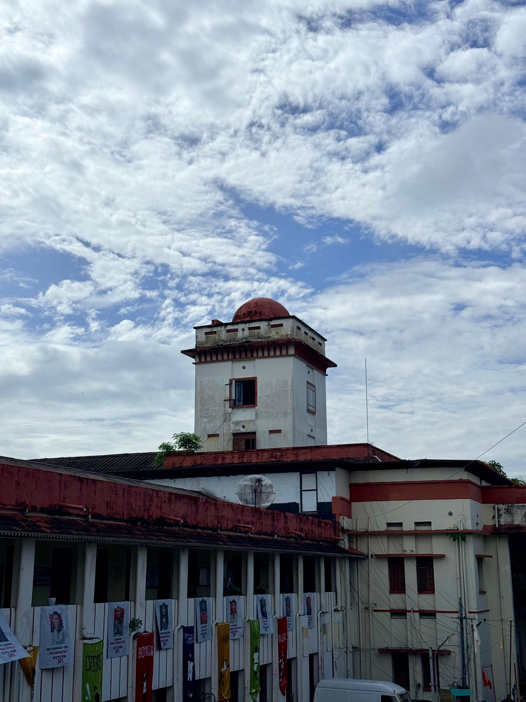

Explore the heritage campus of TD Medical College
TD Medical College is situated in the serene locality of Vandanam, Alappuzha, amidst the lush green landscapes of Kerala. Established as a premier institution of medical education, the campus spans a vast area that beautifully blends heritage architecture with modern facilities.
The campus is home to a sprawling attached hospital that serves as a vital healthcare hub for the region. With well-maintained gardens, tree-lined pathways, and a tranquil atmosphere, it provides the perfect environment for focused learning and personal growth.
From state-of-the-art laboratories to comprehensive library resources, every aspect of the campus is designed to foster academic excellence and holistic development of future healthcare professionals.
World-class infrastructure to support your academic journey
Extensive medical literature collection with access to national and international journals, digital resources, and a quiet reading environment.
500-seat fully equipped auditorium for seminars, conferences, cultural events, and academic gatherings.
Indoor and outdoor facilities including basketball courts, volleyball courts, cricket grounds, and a well-equipped gymnasium.
Modern workstations with high-speed internet access, online medical databases, and e-learning resources.
Comprehensive specimen collection featuring detailed anatomical models and preserved specimens for hands-on learning.
Multi-cuisine dining facility serving hygienic and nutritious meals in a comfortable and spacious setting.
A glimpse into life at TD Medical College